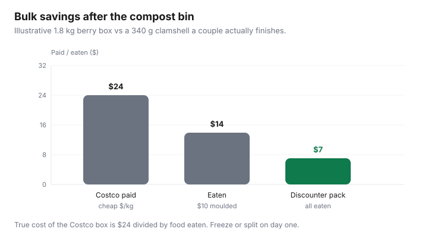

Food & Groceries · Canada
How to buy Costco bulk without creating food waste (freeze, split, share)
Costco’s unit prices are real. So is the 1.8 kg berry box that moulds in a one-bedroom fridge. Personal Finance Canada threads that say “Costco is expensive now” are often describing waste plus impulse, not Kirkland olive oil. The membership did not fail. The freezer plan did.
This is haul remediation for Canadian apartments: freeze the day you get home, split what Costco’s rules allow you to split, skip the SKUs that die fastest, and count true cost after the compost. Pair it with the monthly warehouse / weekly discounter split so Costco is not a Saturday personality.
Disclosure: Freezer organizers, vacuum sealers, and Costco shop cards are offer types. Saving Optimizer may earn a commission if we later add those links. We do not currently claim a Costco partnership. Painter’s tape and bags you already own are enough to start.
Key takeaways
- Portion and freeze the day you buy. Bulk savings are a unit-price claim until food is eaten.
- Love Food Hate Waste Canada still cites about $1,300/year of edible household waste. A Costco box can be a large slice of that.
- Skip giant produce and bakery unless you freeze, cook, or share same day.
- Singles and couples can keep Gold Star if the list is pantry-plus-protein, not a replica of a family-of-five haul video.
- True cost = amount paid ÷ amount eaten. Photograph that, not the receipt total.
Portion and freeze day-of systems
Build a landing ritual before you shop, not after the trunk is full:
- Clear one freezer shelf and one fridge “eat first” bin.
- Shop the list: oil, coffee, frozen veg, meat you will freeze, paper. Not a second ketchup.
- Home: meat first (Health Canada: fridge 4°C, freezer −18°C). Then bread. Then berries onto a tray to freeze loose.
- Label cut and date. Mystery protein is how $24 becomes compost.
- Put two frozen meals on next week’s menu so the freezer is a pantry, not a museum.

Household partner / neighbour share rules
Splitting a pack of chicken you paid for with a neighbour — transferring food, not the membership card — is how apartment buildings beat 2 kg trays. Agree on the split in the parking lot, portion in a clean kitchen, and send a photo of the receipt so nobody is guessing. That is a food system.
Costco’s membership is a primary plus household card under their conditions. We are not going to coach you to treat a neighbour as a household member. If you want two households on one fee, read Costco’s rules at the counter and follow them. The legal membership product and the leftover chicken are different conversations.
Which bulk SKUs spoil fastest
| Usually freeze / pantry | Danger in 7 days | Skip for 1–2 people |
|---|---|---|
| Chicken family packs, ground (portioned), bread, cheese blocks, berries on a tray, coffee, oats, oil | Salad kits, herbs, ripe fruit, bakery unfrozen, opened yogurt tubs | Giant mixed greens, party platters, 24 muffins, a second condiment |
Rotisserie chicken is a maybe: pick the carcass on the way out, portion meat the same night, freeze extra, make stock. Sitting in the fridge until Thursday is how it fails. Same leftover rules as food-waste systems.
Vacuum seal vs freezer bags ROI
Worked example (labelled): a $120 sealer plus $40 of bags year one = $160. If freezer burn was wasting $8 of meat a month, you clear that in 20 months — maybe. If you were not freezing at all, bags at $15 a year fix 80% of the problem. Buy the gadget after three months of bag discipline, not before the first haul. Cube organizers that let you see labels beat a pretty bin you never open.
Singles and couples: membership still possible?
Gold Star is $65 plus tax (Costco.ca, reviewed Sep 2026). That is about $1.25 a week. A couple who freeze protein, drink the coffee, and skip produce bulk often clear it. A single in a room-rental with a bar fridge often will not — go as a guest with someone whose membership is real, or skip. Families clear bulk faster; that math is in family grocery budgeting and membership worth-it.
Executive is a second question (~$3,250 eligible spend). Food you throw out still counted as spend for 2% and as waste for your budget. Do not upgrade to feel better about muffins.
Tracking true cost after waste
For 90 days, keep a notes app: SKU, paid, estimated uneaten. True unit price = paid ÷ eaten weight. If Costco chicken is $8/kg paid but you eat 70%, you paid ~$11.40/kg — maybe worse than a No Frills flyer. That 90-day log is the same audit as membership FOMO, just honest about the bin.
Not-list on the freezer door: no second berries until the bag is gone; no bakery without a freeze plan; no produce you will not cut on Sunday. Costco is a fulfilment centre for the list, not a museum of samples.
Unit-price conversion for warehouse tags sits in how to read $/kg. Gas is a different pile of money — Costco gas vs membership.
Sources & date stamps
- Love Food Hate Waste Canada, plan-it-out / household waste figures (~$1,300/year edible food) reviewed Jul–Sep 2026.
- Health Canada safe food storage (meat fridge windows; freezer −18°C).
- Costco.ca membership fees: Gold Star $65, Executive $130 (plus tax), reviewed 16 Sep 2026.
- Personal Finance Canada / CostcoCanada community consensus on split-shop and waste — directional, not a survey.
Frequently asked questions
Can a single person make Costco groceries work?
Yes, on pantry, coffee, frozen protein, and paper — if you portion the day you buy and skip bulk berries and salad kits. Share a household card only if Costco’s rules fit your actual household. Guest-policy bluffing is not a strategy.
What should I freeze the day I get home?
Bread, extra meat, cheese you will not finish, berries, and leftover rotisserie portions. Love Food Hate Waste Canada’s planning pages beat a second clamshell of greens. Health Canada fridge windows still apply to meat.
Is a vacuum sealer worth it?
Only if you already buy freezer-bound protein every month. A box of freezer bags is enough for most apartments. Run the sealer cost against a year of meat you actually freeze — not against a gadget mood.
Can I split a membership with a neighbour?
Costco memberships are for a primary member plus a household card under their rules, not a rotating building co-op. Splitting a haul you already paid for (and dividing the receipt) is a food strategy. Sharing the card against Costco’s terms is not advice we give.
Does waste erase Executive 2%?
Waste erases unit-price savings first. Executive 2% only sees eligible merchandise you paid for — not food you ate. Gas still does not earn Executive. Track edible dollars, not warehouse theatre.